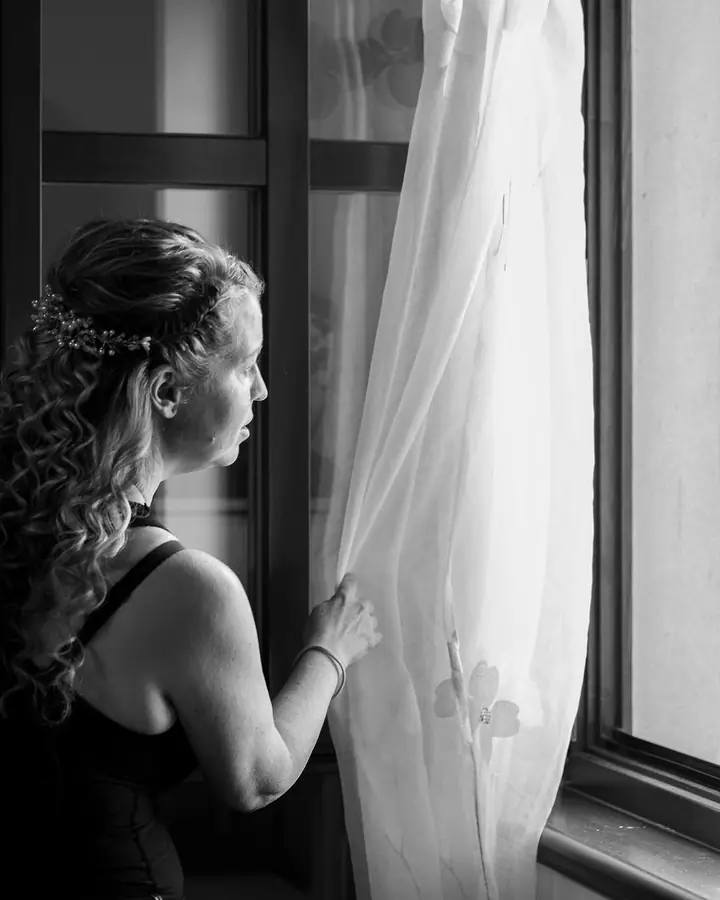
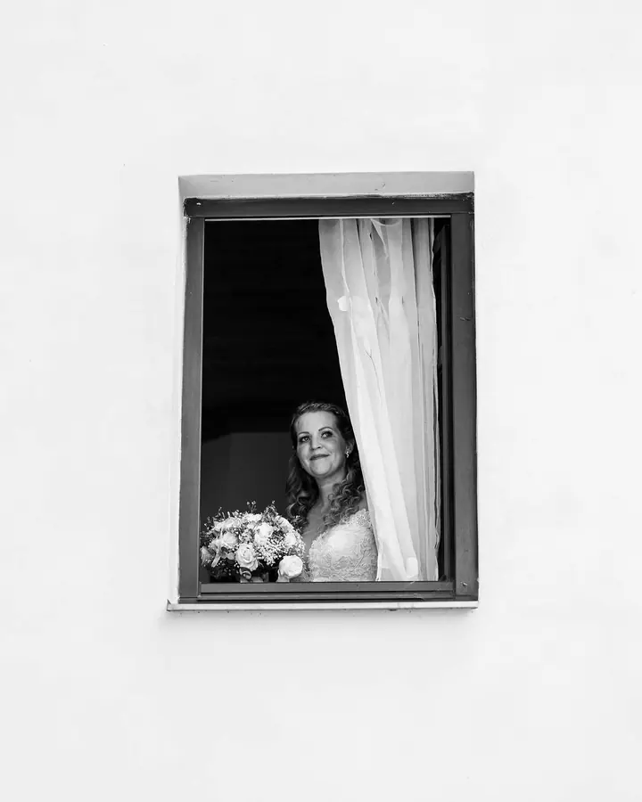
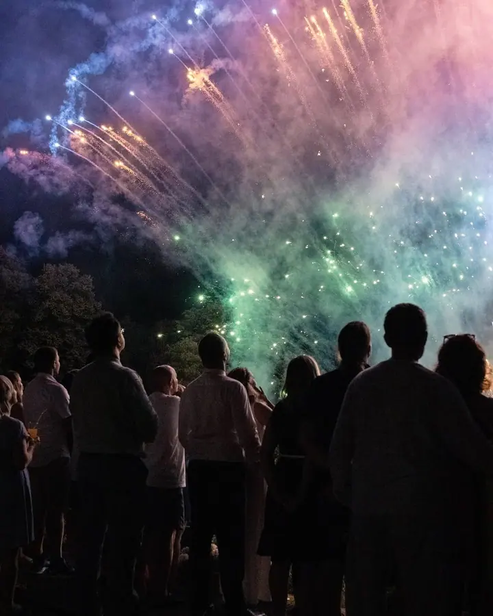
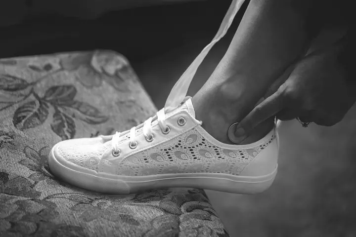
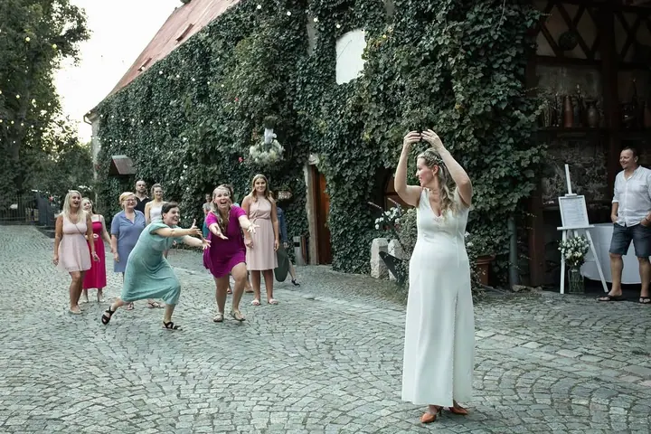
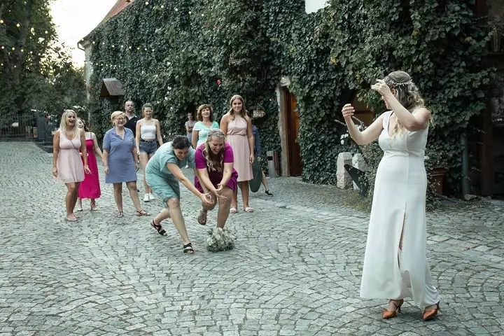

Svatební focení
Fotím svatební den od příprav až po večerní zábavu, včetně prvního tance a ohňostroje. Jako vizážistka vás můžu ten den i nalíčit a učesat.





Jmenuji se Veronika Čechlovská, ale klidně mi říkejte Vika. Fotím svatby, rodiny a těhotenská focení na Litoměřicku a jako vizážistka se postarám i o váš make-up a účes.
Více o mně
„Vzpomínky pro vás zvěčním já.“
— Veronika Čechlovská
Fotím svatební den od příprav až po večerní zábavu, včetně prvního tance a ohňostroje. Jako vizážistka vás můžu ten den i nalíčit a učesat.
Portréty, glamour, boudoir i business portréty. K tomu tematická focení, třeba valentýnské minifocení s andělskými křídly.
Focení pro celou rodinu, pro děti i pro páry. Venku nebo v mém ateliéru.
Památka na čekání na miminko a potom i na jeho první dny. Fotím těhotné maminky i novorozená miminka.
Jsem Vika, tedy Veronika. Fotím svatby, rodiny, páry, těhotenská focení, miminka a děti, ale i portréty, glamour, boudoir a business fotky. Mám vlastní ateliér a nejčastěji mě najdete v Litoměřicích, Roudnici, Štětí, Mělníku a v Praze.
Kromě focení jsem i vizážistka. Nalíčím a učešu vás na svatbu, maturitní ples nebo důležitou schůzku a umím i trendy copy s kanekalonem. Když máte fotografku i vizážistku v jedné osobě, odpadá vám jedna starost.
Kdo nesní, ztratí budoucnost. Kdo nemá vzpomínky, ztratil minulost. Na plnění svých snů musí pracovat každý sám, vzpomínky vám ale ráda uchovám já.
Pošlete mi e-mail nebo zavolejte, o jaké focení máte zájem. Moc ráda vám udělám nabídku.
Vybereme termín a místo, ať už to bude můj ateliér, příroda nebo místo vaší svatby. Když budete chtít, domluvíme i líčení a účes.
Na focení se nemusíte nijak připravovat ani umět pózovat. Postarám se, abyste se před objektivem cítili dobře.
Fotky pečlivě vyberu a upravím a pošlu vám je, ať vám vzpomínky zůstanou na dlouhá léta.
Nejčastěji v Litoměřicích, Roudnici, Štětí, Mělníku a v Praze. Fotit můžeme venku, na místě vaší svatby nebo v mém ateliéru.
Ano, jsem i vizážistka. Postarám se o make-up i účes na svatbu, ples nebo focení a umím i copy s kanekalonem.
Ano, třeba valentýnské minifocení s andělskými křídly. Aktuální tematická focení najdete na mém Instagramu.
Ceny se liší podle typu focení. Napište mi, co si představujete, a já vám udělám nabídku. Nejsem plátce DPH.
veronika@vika-art.cz
Litoměřice · Roudnice · Štětí